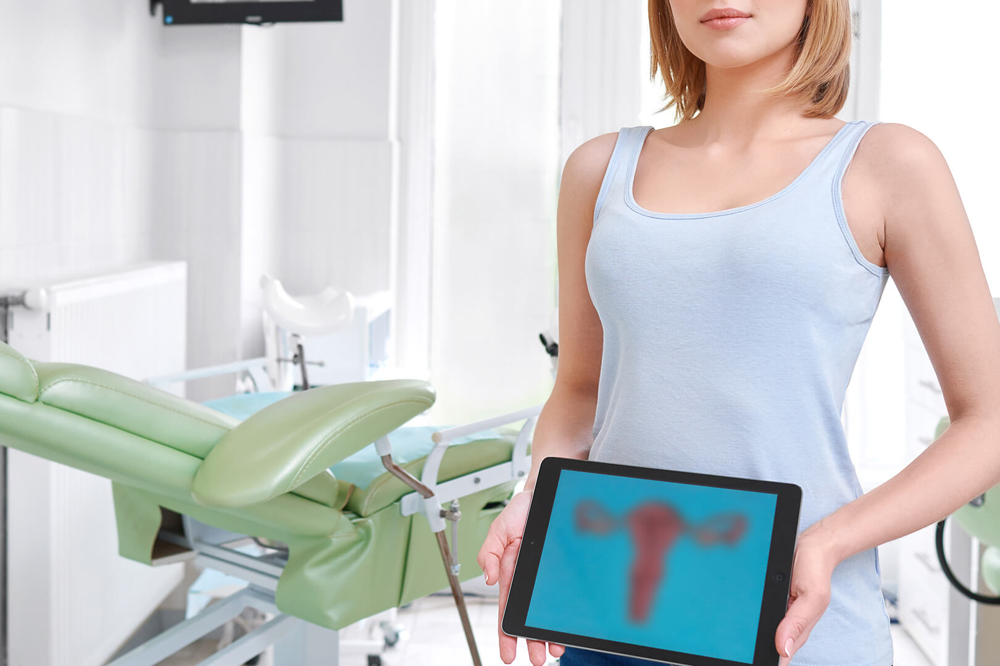

¿Por qué hablamos de atención integral?
Haciendo hincapié en lo Preventivo, este Nuevo Centro contempla no sólo el diagnóstico, sino también el tratamiento más adecuado para cada una de las pacientes.
En este sentido, te ofrecemos una ATENCIÓN PERSONALIZADA Y A CARGO DE UN EQUIPO MULTIDISCIPLINARIO DE PROFESIONALES.
Basado en un concepto holístico y humanizado, y en el conocimiento acabado de las pacientes, nos centramos en el control de tu desarrollo. Esto es, desde la primera consulta ginecológica al momento de la primera menstruación; pasando por los controles y los planes seguros de anticoncepción durante la etapa de adolescencia; la preparación para una concepción adecuada; la atención posparto en caso de recientes mamás; hasta los controles y asistencia especializada en los años de madurez, menopausia y climaterio.
¿Por qué elegirnos?
Con una trayectoria de más de 30 años, hemos decidido crear este Centro exclusivamente atendido por nuestro excelente Servicio de Ginecología, que se enfoca en promover cuidados integrales para la salud de la mujer. Porque sabemos que los controles rutinarios para una detección precoz y un tratamiento temprano son las mejores herramientas de prevención, brindamos atención integral en un ambiente cálido, acogedor y accesible.
Ofrecemos una gama completa de estudios con equipamiento de última generación para la detección, diagnóstico y cuidado de la salud integral de la mujer: mamografía digital, ecografía mamaria y ginecológica
En pos de lograr nuestros objetivos, nos abocamos a la prevención primaria y secundaria de distintas patologías, tanto benignas como malignas, así como también al tratamiento de enfermedades avanzadas, con una tecnología imagenológica y quirúrgica de la más alta calidad.
Nuestros servicios incluyen revisiones anuales y pruebas de Papanicolaou de rutina, Video-colposcopías, tratamiento de patologías mamarias y patologías cervicales uterinas; atendemos casos de HPV, infecciones de transmisión sexual, dolores pélvicos y sangrados anormales; realizamos cirugías ginecológicas generales y oncológicas, tratamientos de reproducción y fertilidad; y abordamos casos de menopausia y síntomas de envejecimiento. Brindamos consejería anticonceptiva y servicios de planificación familiar.
Personalizando, siempre, las opciones de tratamiento para cada una de nuestras pacientes.
PRIMERO, EN NUESTRAS MANOS.